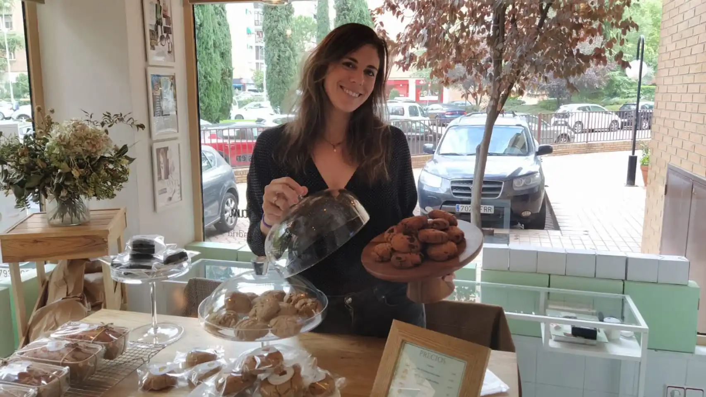
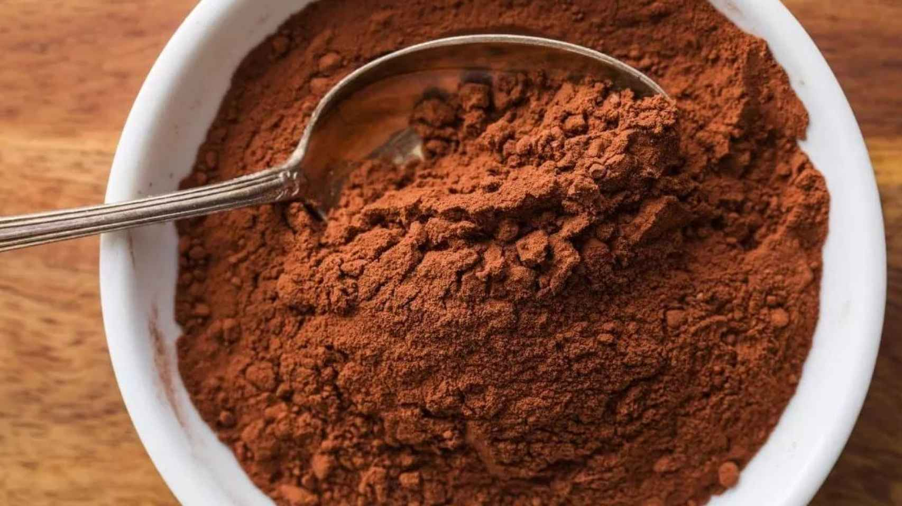
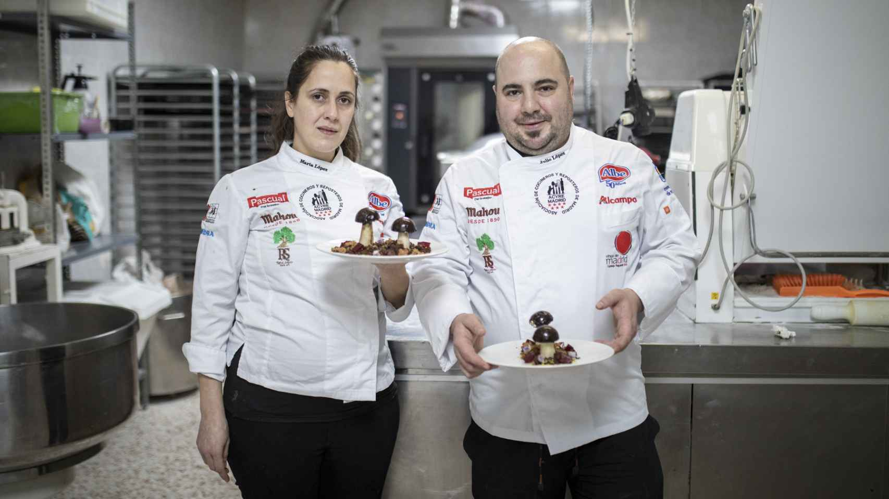
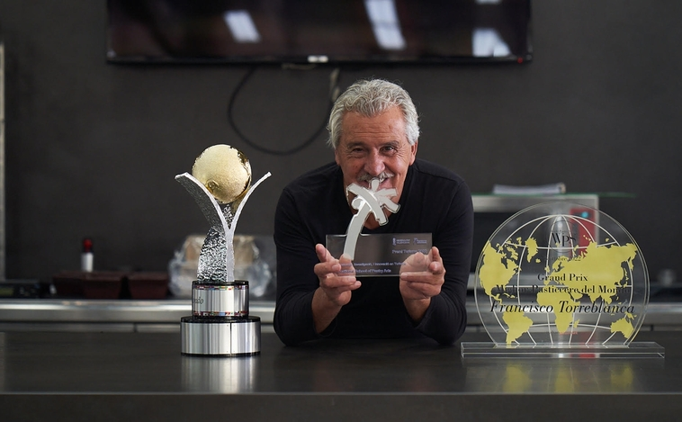

MUNDO DE LA REPOSTERÍA:
Noticias destacadas del mes de Noviembre 2022

Andrea, la repostera tras la 1ª pastelería de Madrid sin gluten,
sin lactosa y sin azúcar: productos a 1,50 €
...Y, como un círculo vital, aquel primer pensamiento de aprender
sobre la alimentación saludable -por el nacimiento de su hijo Nicolás-
ha cristalizado este 2022 con el nacimiento de Nicolina, la primera pastelería
de Madrid especializada en productos sin gluten, sin lactosa y sin azúcar...
Seguir Leyendo

El 'chocolate' saludable de Mercadona que arrasa:
sin azúcar y rico en proteínas
...más tiempo en casa supuso más tiempo para cocinar, y para muchos,
el descubrimiento de la panadería y repostería casera, más beneficiosa que
la industrial. Con esa idea en mente, Mercadona ha decidido revalorizar un
viejo conocido de los amantes del cacao, el 'Cacao puro' de marca 'La Chocolatera',
cuyo productor no es otro que Chocolates Valor S.A. que lo elabora en su planta de
Villajoyosa, Alicante...
Seguir Leyendo
Las 10 mejores pastelerías sin gluten en España
...En España, según datos de la plataforma Celicidad, entre un 1 y un 2% de
la población española es celíaca...Además, hay que tener en cuenta que la celiaquía,
catalogada como una enfermedad autoinmune para la que no hay cura. A consecuencia de esto, cada vez existen más restaurantes en los que es posible comer sin gluten, así como
lugares en los que comer los mejores dulce sin gluten...
Seguir Leyendo

Probamos los postres de los López,
los mejores reposteros de Madrid: sus bizcochos históricos
...Lo que marca la diferencia entre sus antepasados y ellos es que, recientemente,
han alcanzado la gloria. Marta López (Ávila, 1983), en colaboración con su hermano,
ha sido nombrada la mejor repostera de la Comunidad de Madrid en la final de la XXVIII
Edición del Certamen Gastronómico de la Comunidad de Madrid celebrada hace unos días
bajo la dirección de la Asociación de Cocineros y Reposteros de Madrid (Acyre)...
Seguir Leyendo

Italia corona a Paco Torreblanca como «Mejor Pastelero del Mundo 2022»
El respeto a la tradición, la pasión por la innovación y el compromiso
con la evolución de la alta pastelería de Paco Torreblanca vuelven a ser
merecedores del reconocimiento internacional. A su dilatado palmarés de
premios-con una cosecha de más de 150 galardones, entre los que se encuentran
el de Mejor Pastelero de España y de Europa- se suma ahora el prestigioso «Mejor
Pastelero del Mundo 2022»...
Seguir Leyendo